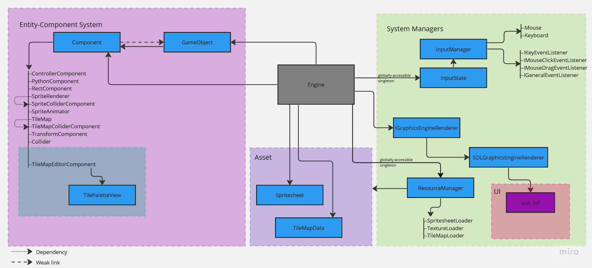

The MSPJ game engine is a component-based engine with tile paintbrush level design functionality. It is meant for top-down, sprite-based
RPG-style games. Users can also add their own python scripts to modify the behavior of the game objects. The engine's paintbrush tool GUI is
based on the kiss_sdl library.
Features
Custom tile paintbrush with GUI to select drawing tiles
Brush
b
draws the tile of your choosing by typing in its corresponding integer
Eraser
e
erases the tile you select
Collider brush
c
adds collidable tiles, represented by a red tinge over tiles
Collider eraser
r
deletes the collidable tile you select
Documentation
This is the content for Menu Item 3.
Engine Architecture

Please open this image in a new tab to get a better view of our architecture!
Binaries
This is the content for Menu Item 3.
Post-Mortem
Things we did well:
Good at scoping
At the beginning, we brainstormed a lot of potential ideas, and we gradually narrowed down the ideas that we were interested in. We always took small chews, making incremental changes to the game engine such that we were always to compile it.
We used Miro as a tool for brainstorming and planning, maximizing our productivity.
The MSPJ team produced the engine and game in an agile-adjacent workflow with weekly “sprints”. We regularly had standups where we let the team know what we were working on, what we were having issues with, and what our intentions and schedules for the project were for the following week. Because of this system, we were able to clearly define and organize our goals.
Engine Architecture
As per the assignment specification, we used an entity-component system, where the event-handling (including input), update and rendering are all delegated to game objects. This allowed for us to modify the behavior of game objects easily by making components that can interface with the rest of the engine with those three things.
The idea of components also allowed us the tile map editor component, which is an extension of our engine that allows users to paint tiles on the tile map.
Tile brush and pallete
This was the main selling point of our game engine (aside from the minimum requirement of an entity-component system and integrating a scripting language).
It felt excellent to be able to modify a tile map with GUI support.
Jake's build system
Jake created us a build system that was able to build the game engine with the tile map editor support and the game that we were making with our engine that could be made only by knowing Python. This allowed for a smooth process.
Phi's art
Phi took the extra step to make art for our game, and they were all amazing.
Pair programming and supporting eachother
We often implemented features in pairs. We bounced ideas off each other to make design decisions, keeping us all on the same page and ensuring that our stress testing our ideas.
Regardless, when we faced problems, we were looking out for each other, giving each other technical and emotional support.
How to take the project further:
We originally intended to have combat and RPG-style narrative elements. If we had more time, we could implement the components that would allow for those systems.
A stronger integration of a GUI library. As of now, it's only good enough for buttons and entry boxes. Learning a GUI library takes time, and being able to integrate it effectively with existing architecture takes more careful planning and consideration.
What we would change if we had another month:
The tile editor GUI should allow users to see the texture atlas and click on the tiles they want to paint with, and that would automatically select with. This would be more ergonomic than selecting a tile to paint with via a unique identifier.
Credits
The Ms. Pajamas Game Engine was created by Marvin Chong, Samik Mathur, Phi Garcia, and Jake Pine.
The name of the engine comes from the combination of first initials of all team members (MSPJ's engine).
Additional credit to Mike Shah for his excellent instruction,
and Robert Nystrom's Game Programming Patterns book for architecture inspiration and coding examples.